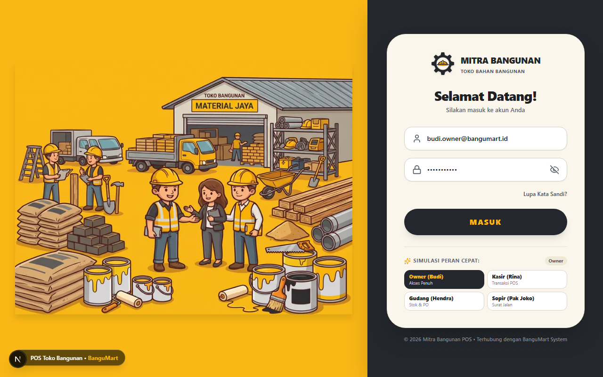

http://localhost:3000/login

Gambar 1: Tampilan antarmuka Halaman Masuk & Autentikasi Peran
Akses & Keamanan
Halaman Masuk & Autentikasi Peran
Gerbang masuk aplikasi POS dengan desain visual toko bangunan, keamanan sandi, dan simulasi pergantian peran cepat.
Desain Split-Screen Modern
Sisi kiri menampilkan ilustrasi toko bangunan Mitra Bangunan Material Jaya dan sisi kanan kartu formulir masuk bernuansa hangat.
Simulasi Peran Cepat (1-Klik)
Tombol pintas untuk langsung memilih akun demo: Owner (Budi Santoso), Kasir (Rina), Gudang (Hendra), atau Sopir (Pak Joko).
Fitur Lupa Kata Sandi Terintegrasi
Modal interaktif untuk simulasi pengiriman tautan instruksi pemulihan kata sandi ke email terdaftar pengguna.
Keamanan & Visibilitas Sandi
Dilengkapi toggle lihat/sembunyikan kata sandi serta validasi kelengkapan isian sebelum diarahkan ke sistem POS.
Tips Penggunaan: Pilih profil peran yang sesuai untuk menguji batasan hak akses diskon dan wewenang operasional toko.